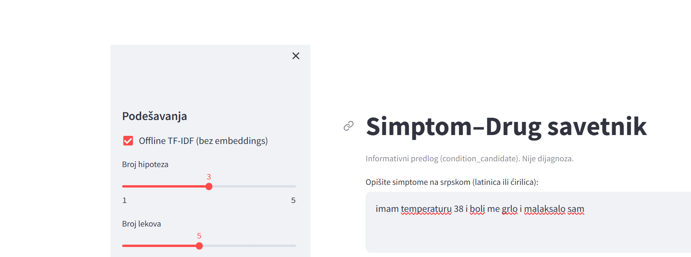
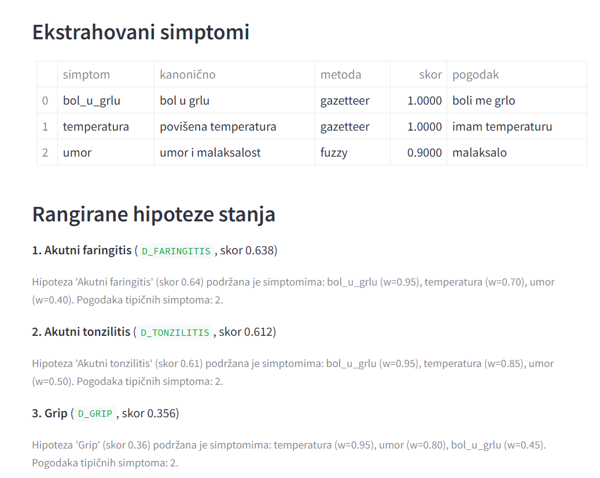
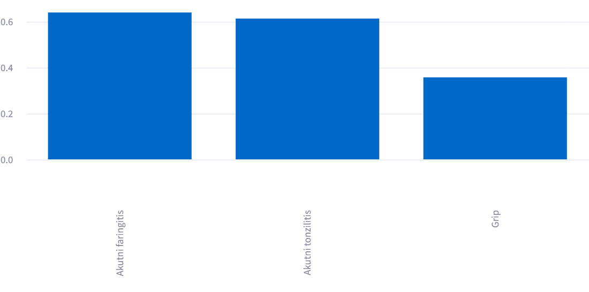
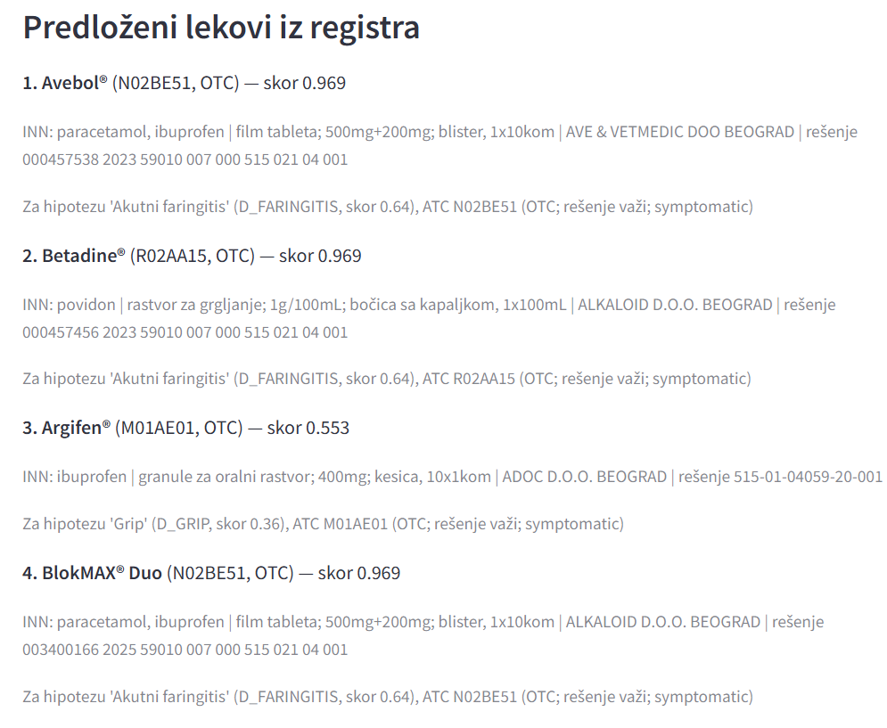

1. Šta program radi
Korisnik upiše tegobe onako kako bi ih ispričao, na primer
imam temperaturu 38 i boli me grlo. Program vrati prepoznate simptome,
tri hipoteze stanja sa skorovima i obrazloženjem, i lekove iz domaćeg registra
sa oznakama da li se izdaju bez recepta. Ako opis liči na hitno stanje, umesto
lekova stiže uput na Hitnu pomoć (194). Ako liči na tegobe iz područja mentalnog
zdravlja, stiže uput stručnjaku, bez predloga lekova. Sistem ne postavlja dijagnozu:
svuda se govori o rangiranim hipotezama (condition_candidate).
2. Tok podataka kroz program
Šest faza u nizu, plus bočna kočnica za hitnost. Klikni na dugme da prođeš kroz pravi primer boli me grlo i imam temperaturu 38 korak po korak.
3. Normalizacija: od rečenice do uporedivog teksta
Problem: Boli me GRLO, imam Temperaturu 38! i ćirilični dvojnik moraju završiti u istom obliku, inače bi se sve dalje pisalo dvaput. Rešenje ima fiksan redosled: preslovljavanje ćirilice u latinicu (dvoslovi lj, nj, dž pre pojedinačnih slova), mala slova, skidanje dijakritika (š u s, đ u d), brisanje interpunkcije. Probaј uživo:
4. Leksikon umesto modela
Skup koncepata je zatvoren (71 simptom), pa se oblici nabrajaju umesto da se uče: svaki simptom ima kanonični naziv, sinonime sa padežima i kolokvijalizme. Time otpada potreba za lematizerom od nekoliko stotina megabajta, a sistem ostaje potpuno offline. Izvod iz stvarne tabele:
| ID | Kanonično | Primeri formi | Šifra |
|---|---|---|---|
bol_u_grlu | bol u grlu | boli me grlo, grebe me grlo, grlobolja, dera me grlo… | J02 |
temperatura | povišena temperatura | imam temperaturu, groznica, vrućica… | R50 |
kasalj | kašalj | kašljem, suvi kašalj, nadražajni kašalj… | R05 |
anksioznost | anksioznost | anksiozan sam, strepnja, nervoza… | F41.1 |
5. Fuzzy: hvatanje slovnih grešaka
Rečnik ne vidi tipfelere poput tempraturu. Zato se prozori teksta porede Levenštejnovom sličnošću (broj poklopljenih znakova $M$):
Ključno otkriće projekta: stroga mera pobeđuje tolerantnu. Tolerantna WRatio paru svrbe me oči / boli me daje 85.5 (zajedničko me dominira), strogi ratio daje 42.1 i ispravno odbacuje. Prag je 85: propušta tempraturu (85.7), zaustavlja boli me glava → boli me grlo (80.0). Probaj i sam (ulaz se normalizuje kao u programu):
6. TF-IDF semantika: hvatanje parafraza
Kad rečnik i fuzzy zakažu (obrnut red reči, prepričan opis), tekst i simptom se porede kao vektori. Težina termina je tf · log(N/df): retki, diskriminativni termini vrede više. Indeksiranje ide preko karakterskih 3-5-grama, pa se padežne razlike apsorbuju bez stemera. Sličnost je kosinusna, prag 0.35. Uprošćena demonstracija na nivou reči (program koristi slovne n-grame):
Korpus: tri kratka dokumenta (boli me grlo / curi mi nos / boli me glava). Stvarni sistem poredi ceo opis sa konkatenacijom do 4 forme po simptomu.
7. Negacija: nemam temperaturu nije simptom
Okidač (ne, nemam, bez…) negira pojmove u naredna 4 tokena. Rastavno ali resetuje doseg, pa drugi deo ostaje afirmativan. Izuzetak: ne boli me glava znači da glava boli.
8. Rangiranje: pokrivanje profila
Opis pacijenta je uvek delimičan, pa se meri pokrivenost onoga što jeste rečeno, a ne kažnjava ono što nije. Za stanje $d$, skup prepoznatih simptoma $M$ sa pouzdanostima $c$ i profil sa težinama $w$:
gde je $T$ broj pogođenih tipičnih simptoma. Pomeri klizače (pouzdanosti) za faringitis (težine 0.95 i 0.70, zbir svih 3.25, oba tipična) i gledaj račun uživo:
9. Od hipoteze do leka: ATC most
Registar ne sadrži indikacije, pa se stanju dodeli ATC prefiks, a kandidat je svaki zapis čiji kod tim prefiksom počinje. Primer hijerarhije:
- N nervni sistem
- N02 analgetici
- N02B anilidi
- N02BE paracetamol
- N02BE01 konkretan lek
- N02BE paracetamol
- N02B anilidi
- N02 analgetici
Skor leka spaja skor hipoteze, OTC bonus (režim BR, bez recepta) i važenje rešenja. Pošto paracetamol ima 83 zapisa a nitrofurantoin 7, uvedena je raznovrsnost: deduplikacija po proizvodu (pakovanje se ignoriše) i najviše dva leka po ATC grupi kružnim uzimanjem. Tipična rečenica razloga: Za hipotezu 'Akutni faringitis' (D_FARINGITIS, skor 0.53), ATC N02BE51 (OTC; rešenje važi; symptomatic).
10. Bezbednost: tri kočnice
11. Tehnologije i razlog svake
| Tehnologija | Uloga | Zašto baš ona |
|---|---|---|
| Python 3.10+ | ceo sistem | čitljivost, standard za NLP prototipove |
| scikit-learn (TF-IDF) | semantika | stabilna implementacija, bez modela, offline |
| RapidFuzz | tipfeleri | Levenštejn u C-u, brz, bez zavisnosti |
| Streamlit | UI | interfejs u jednom fajlu, bez frontenda |
| CSV / JSONL / JSON | znanje | čitljivo i neprogrameru, verzionira se u gitu |
| matplotlib, pytest | eval, testovi | standardni, reproducibilni, offline |
| LaTeX (MiKTeX) | rad | formule, tabele i literatura na akademskom nivou |
Zajednički imenilac: sve radi offline, ima zakucanu verziju i ne traži nalog, ključ ni grafičku karticu.
12. Evaluacija: šta brojevi znače
Automatski, offline, nad 70 ručno pisanih slučajeva (tipfeleri, ćirilica, negacije).
Ablacija ekstrakcije (RQ1)
Svaki sloj dodaje: fuzzy hvata tipfelere, TF-IDF parafraze. Top-1 od 0.70 odražava leksičko susedstvo (faringitis, tonzilitis i prehlada dele grlo i temperaturu), pa sistem izveštava trojku.
13. Galerija: sesija uživo
Ulaz sa namernim tipfelerom: imam temperaturu 38 i boli me grlo i malaksalo sam.




14. Pokretanje programa
python -m venv .venv .venv\Scripts\python -m pip install -r requirements.txt $env:PYTHONPATH = 'src' python -m sda.cli --text "boli me grlo i imam temperaturu 38"
streamlit run src/sda/ui/streamlit_app.py # UI, port 8501 pytest -q # 29 testova python scripts/run_eval.py --no-embeddings # metrike u reports/